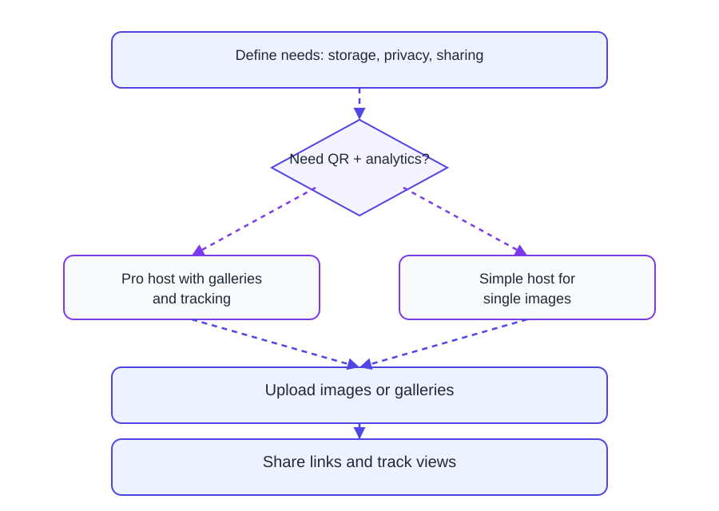

Quick decision table
| Asset type | Preferred format | Reason |
|---|---|---|
| Photography | JPEG | Good compression, broad support |
| UI screens/logos | PNG | Lossless edges |
| Animated snippets | GIF / WebP | Animation support |
Hosting landscape

Upload + output references


Updated March 2, 2026
MaiImg / 麦瓜图床
Choose format by destination, not habit.
JPEG 80-85% for balanced size/quality.
PNG for sharp edges and transparency.
WebP/AVIF where workflow allows.
| Asset type | Preferred format | Reason |
|---|---|---|
| Photography | JPEG | Good compression, broad support |
| UI screens/logos | PNG | Lossless edges |
| Animated snippets | GIF / WebP | Animation support |
